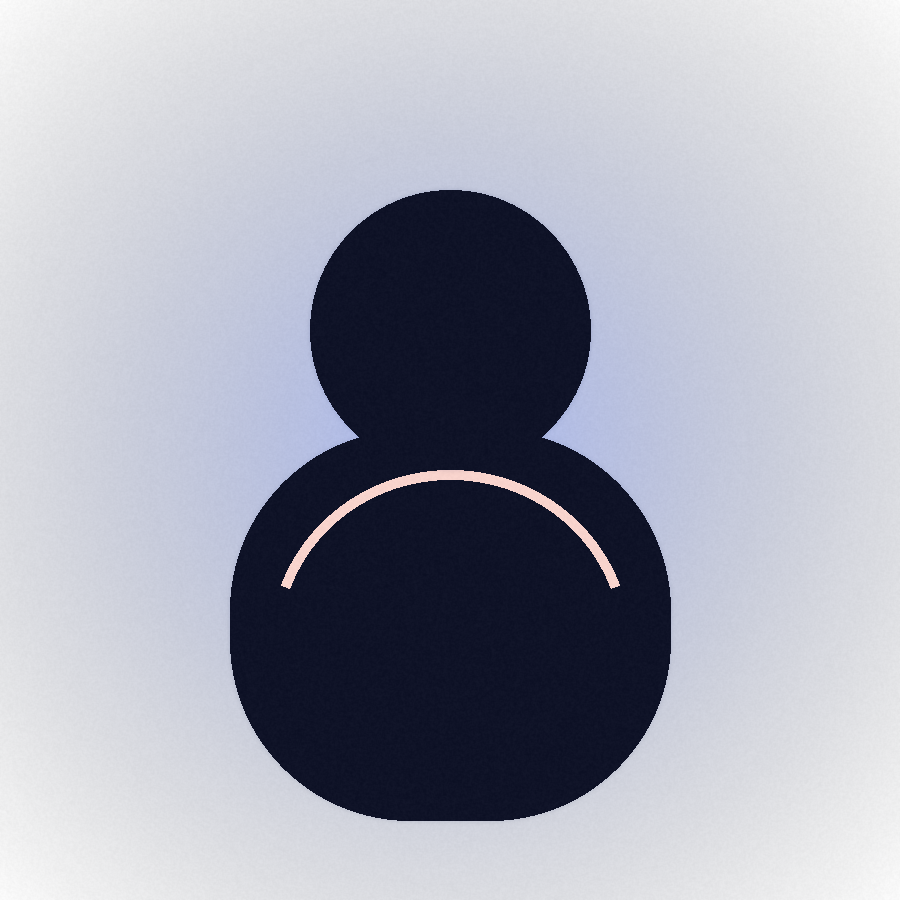

Clear Scope of Work
Dedicated space for repair, fabrication, aluminum-focused jobs, and practical custom work.
JDK Welding Repair brings a clean, direct approach to fabrication and repair work, with special attention to aluminum projects that need precision, consistency, and a finish you can trust.
Use this page as the core introduction to JDK Welding Repair. It gives you space for your story, your workmanship standards, and the kind of jobs you want more of.

JDK Welding Repair is positioned as a local South Jordan business for customers who want dependable metal repair and fabrication without the runaround. The copy stays personal and straightforward so the page feels like it came from a real tradesperson, not a generic contractor template.
If you want to personalize this further, replace this paragraph with your background, the kinds of projects you like most, and what customers can expect when they work with you.
This section is written to make aluminum the memorable differentiator. It gives you room to talk about lightweight components, repairs that need a cleaner finish, and the kind of careful workmanship that clients often struggle to find.

The rest of the site is split into clear, useful pages so a potential customer can move from interest to contact without hunting.
Dedicated space for repair, fabrication, aluminum-focused jobs, and practical custom work.
Gallery layouts use strong process photography so the site feels active, industrial, and credible.
The contact page keeps the next step simple with a direct link to jdkweldingrepair@gmail.com.
Use the contact page to turn this into a real client-facing site. Add your headshot, swap in your finished project photos, and replace the testimonial placeholders with verified customer feedback.